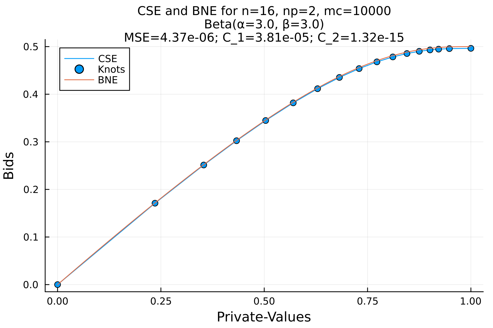
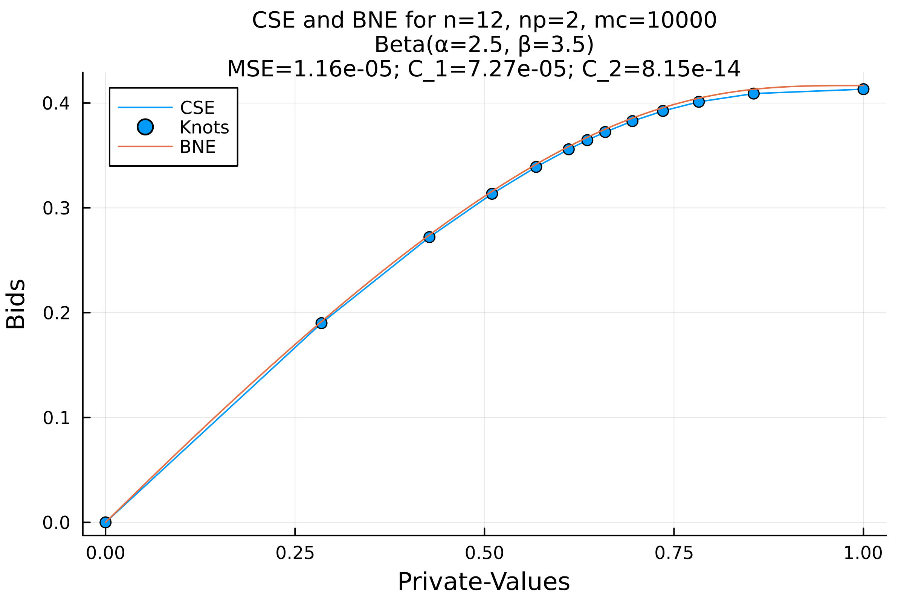

Symmetric CSE example - piecewise linear form
This is a simple example of how to run the symmetric CSE case from the supporting material to the paper by Armantier et al. [1].
Install dependencies
Enter the Julia REPL (julia) and run:
using Pkg
Pkg.add(url="https://github.com/mjpsanpedro1222/ConstrainedStrategicEquilibrium.jl")Load required modules
using ConstrainedStrategicEquilibrium
using Plots
using DistributionsCreate the symmetric CSE problem
Create the default symmetric CSE problem with the following:
cse_prob = SymmetricAfrprogsCSEProblem()SymmetricAfrprogsCSEProblem(np=2, mc=10000, n=2..16, Beta(α=3.0, β=3.0))Compute the CSE
Now compute the CSE for the problem we created
solutions = compute_cse(cse_prob)8-element Vector{ConstrainedStrategicEquilibrium.SymmetricCSESolution}:
SymmetricCSESolution(n=02, MSE=3.93e-04, C_1=NaN, C_2=4.06e-17)
SymmetricCSESolution(n=04, MSE=5.55e-05, C_1=1.45e-03, C_2=3.34e-17)
SymmetricCSESolution(n=06, MSE=2.96e-05, C_1=3.69e-04, C_2=2.07e-16)
SymmetricCSESolution(n=08, MSE=3.11e-05, C_1=1.04e-04, C_2=3.88e-17)
SymmetricCSESolution(n=10, MSE=1.26e-05, C_1=2.30e-04, C_2=2.00e-13)
SymmetricCSESolution(n=12, MSE=1.36e-05, C_1=4.99e-05, C_2=6.13e-15)
SymmetricCSESolution(n=14, MSE=3.87e-06, C_1=2.16e-04, C_2=3.67e-15)
SymmetricCSESolution(n=16, MSE=4.37e-06, C_1=3.81e-05, C_2=1.32e-15)Postprocessing
Plot the final successful solution, comparing the computed CSE to the "analytical" Bayes-Nash Equilibrium and save the figure to a file.
for sol in Iterators.reverse(solutions)
if sol.success
cseplot(sol; dpi=300)
savefig("afr-progs-sym.png")
break
end
endView the plot showing the CSE and BNE: 
Create a different problem and solve it
Now create a non-default problem, e.g. by lowering the maximum value of n and changing the distribution parameters:
cse_prob = SymmetricAfrprogsCSEProblem(maxn=12, distribution=Beta(2.5, 3.5))SymmetricAfrprogsCSEProblem(np=2, mc=10000, n=2..12, Beta(α=2.5, β=3.5))Compute the CSE:
solutions = compute_cse(cse_prob)6-element Vector{ConstrainedStrategicEquilibrium.SymmetricCSESolution}:
SymmetricCSESolution(n=02, MSE=5.01e-04, C_1=NaN, C_2=3.07e-17)
SymmetricCSESolution(n=04, MSE=5.77e-05, C_1=1.70e-03, C_2=2.30e-17)
SymmetricCSESolution(n=06, MSE=4.96e-05, C_1=2.64e-04, C_2=2.28e-17)
SymmetricCSESolution(n=08, MSE=1.44e-05, C_1=4.26e-04, C_2=1.84e-17)
SymmetricCSESolution(n=10, MSE=1.28e-05, C_1=1.35e-04, C_2=2.04e-17)
SymmetricCSESolution(n=12, MSE=1.16e-05, C_1=7.27e-05, C_2=8.15e-14)Finally, plot the last successful solution:
for sol in Iterators.reverse(solutions)
if sol.success
cseplot(sol; dpi=400)
savefig("afr-progs-sym-beta2535.png")
break
end
endView the plot showing the CSE and BNE: 
References
- [1] Armantier et al. Journal of Applied Econometrics, 23 (2008)
This page was generated using Literate.jl.